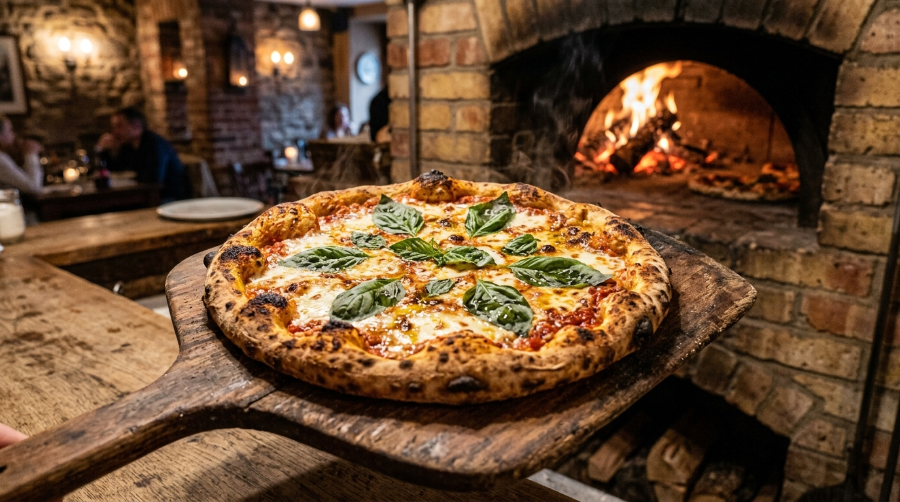

Hand-Tossed NY Crust
Hand-stretched thin dough baked golden crisp with perfect foldable crust slices & premium whole milk mozzarella.
Discover NY & Sicilian Craft →South Charlotte's premier authentic NY-style pizzeria at 16721 Orchard Stone Run, Suite 120 in Blakeney. Hand-stretching fresh dough daily, baking thin foldable crusts, Sicilian thick square pies, stuffed calzones, & baked ziti casseroles.

Hand-stretched NY dough, volcanic stone deck baking, & family recipes.
Hand-stretched thin dough baked golden crisp with perfect foldable crust slices & premium whole milk mozzarella.
Discover NY & Sicilian Craft →Fresh dough folded over creamy ricotta, melted mozzarella, ham, pepperoni, & served with warm marinara dipping sauce.
Discover Calzones Craft →16721 Orchard Stone Run, Suite 120. Open Mon 12-9pm, Tue-Thu 11am-9pm, Fri-Sat 11am-10pm, & Sun 12-9pm.
View Full Menu →